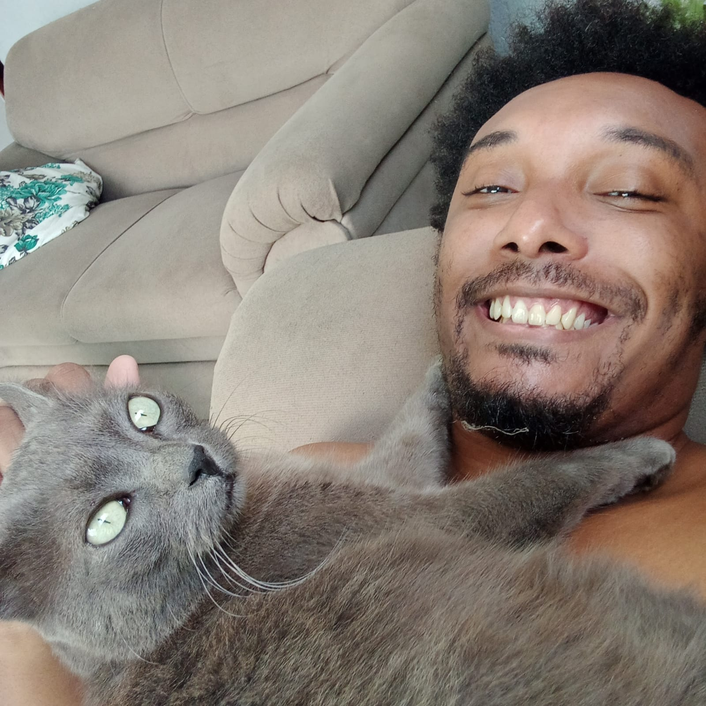

A LITTLE ABOUT MYSELF
About me
Hello! I am Wendell Cunha, a mathematician interested in research, teaching and the connections between abstract ideas.
I received my Master's degree in Mathematics from the Federal University of Minas Gerais (UFMG), Brazil, in 2024. My dissertation focused on the representation theory of finite groups and applications to probability.
I also have experience with Python programming and am beginning to explore data science. Outside mathematics, I hold a brown belt in Taekwondo and share my home with a cat named Clotilde.
This website is a space to bring together my academic interests and the mathematical ideas I want to share.
